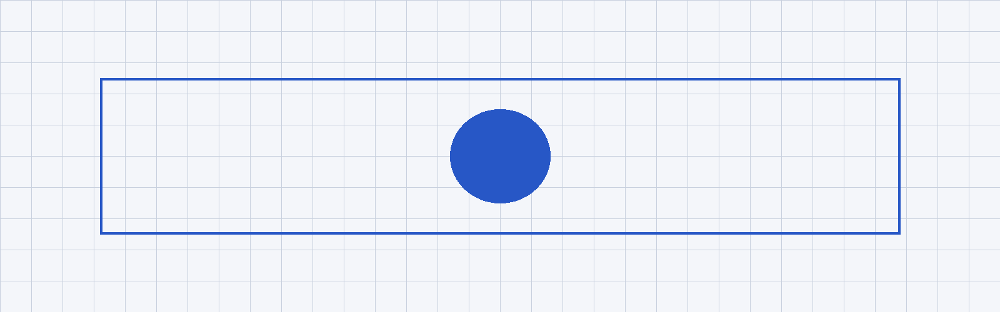
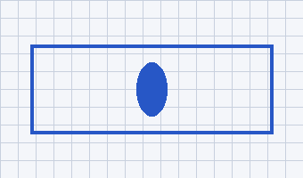

边界情况：把每个组件都推到极限，看看版面会在哪里先出问题
这一讲不讲知识，只做压力测试。每个小节对应一类容易出问题的写法：内容太宽、太长、太多、嵌套太深，或者几种组件挤在一起。
- 确认宽表格、长代码、长公式都只在自己内部滚动
- 确认提示卡里可以放列表、代码和表格
- 确认连续的旁注不会互相压住
- 确认四种小测在各种状态下都正常
提示卡的全部类型，以及可折叠的写法
先是七种类型各一张，然后是可折叠的版本。特别注意 note 类型：它与旁注共用了 note 这个类名。
这是 note 类型的提示卡。它的正文颜色应当与其他类型完全一样。
这是 insight 类型的提示卡。它的正文颜色应当与其他类型完全一样。
这是 memory 类型的提示卡。
这是 question 类型的提示卡。
这是 pitfall 类型的提示卡。
这是 danger 类型的提示卡。
这是 exam 类型的提示卡。
可折叠的 note：标题前后不应出现多余的括号
展开之后的正文。正文前后也不应出现多余的括号。
默认展开的 pitfall，标题特别长特别长特别长特别长特别长特别长特别长特别长特别长特别长特别长，看看折行之后图标和箭头的位置
展开之后的正文。
提示卡里先是一段话，带一条旁注这条旁注在提示卡里，所以不会浮到页边，而是点击序号展开。，然后是列表、代码和表格。
- 第一条要点
- 第二条要点，带
inline_code()- 嵌套的有序列表第一项
- 嵌套的有序列表第二项
def greet(name):
return f"你好，{name}"| 名称 | 数值 |
|---|---|
| 甲 | 1 |
| 乙 | 22 |
太宽的内容
九列的表格
| 算法 | 最好情况 | 平均情况 | 最坏情况 | 空间 | 稳定 | 原地 | 适用场景 | 发表年份 |
|---|---|---|---|---|---|---|---|---|
| 冒泡排序 | O(n) | O(n²) | O(n²) | O(1) | 是 | 是 | 教学演示，几乎不用于实际工程 | 1956 |
| 归并排序 | O(n log n) | O(n log n) | O(n log n) | O(n) | 是 | 否 | 需要稳定排序、外部排序 | 1945 |
| 快速排序 | O(n log n) | O(n log n) | O(n²) | O(log n) | 否 | 是 | 通用的内存排序 | 1961 |
很长的代码行
const short = 1;
const veryLongLine = someFunction(argumentNumberOne, argumentNumberTwo, argumentNumberThree, argumentNumberFour, argumentNumberFive, argumentNumberSix);
function demo() {
const template = `多行
模板字符串`;
return template;
}- 这一行特别长，代码框应当横向滚动，标亮的底色要延伸到滚动区域的最右端。
- 模板字符串跨了两行：着色的标签要在第二行重新打开。
- 最后一条讲解。
很长的公式
行内也可能很长：\sum_{i=1}^{n} i = 1 + 2 + 3 + \cdots + n = \frac{n(n+1)}{2}，后面紧跟标点；还有上下标很高的 \displaystyle\int_0^\infty e^{-x^2}\,dx = \frac{\sqrt{\pi}}{2} 会不会撑开行距。
没有空格的长串
一个很长的网址：https://example.com/a/very/long/url/that/has/no/natural/break/points/and/keeps/going/and/going/and/going/index.html，以及一段行内代码 averyveryveryveryveryveryveryveryveryveryveryveryveryveryverylongidentifierwithoutanybreaks。
连续的旁注与术语
同一段里有三条旁注第一条旁注，内容稍微长一点，用来占据页边的空间，看看后面的旁注会不会和它重叠在一起。紧挨着出现第二条旁注，紧跟在第一条后面。，它们在页边应当依次排开第三条旁注。里面有加粗、代码和链接。，不能互相压住。
第一次出现的术语 压力测试，之后再次出现的 压力测试，以及别的讲里定义的 算法。
行内元素大全：加粗、着重、标亮、code、Ctrl + Shift + P、HTML、H2O、x2、外部链接、邮件链接、有文字的跨讲链接、、、、、。
没有出处的引文。它应当只是缩进的楷体。
三级标题
三级标题下的正文。
四级标题
四级标题下的正文。
- 一个比较长的名称
- 它的解释。解释也可以很长很长，长到需要折行，这时候左边的名称一列应当保持顶端对齐。
- 短名
- 解释。
图片、并排的图与演示

| i | 值 |
|---|---|
| 0 | 3 |
| 1 | 7 |
- 读题
- 拆解分成小问题
- 写出步骤
- 验证
- 优化只在必要时
- 重构
- 发布
第一张卡片
内容比较短。
第二张卡片
内容比较长，长到这一张卡片需要比旁边的卡片多占好几行，看看它们的高度是否对齐。
第三张卡片
内容比较短。
Python 的内容。
JavaScript 的内容。
TypeScript 的内容。
名字很长的选项卡的内容。
Rust 的内容。
Go 的内容。
四种小测
单选题，带提示和解析。题干里有代码 a < b 和公式 x^2。
- 第一个选项
- 第二个选项（正确），这个选项的文字特别长特别长特别长特别长特别长特别长特别长特别长特别长特别长特别长，需要折行
- 第三个选项，里面有
code
提示：选第二个。
解析：因为第二个是正确的。
多选题，没有提示。
- 正确的甲
- 错误的乙
- 正确的丙
解析：甲和丙。
填空题：圆周率约等于多少（保留两位小数）？
提示：三点一四。
自评题：用自己的话解释什么是压力测试。
参考答案：把系统推到极限，观察它在哪里先出问题。
- 第一项任务
- 第二项任务，文字比较长，长到需要折行才能放下，这时候勾选框应当与第一行文字对齐，而不是垂直居中
- 第三项任务，带
code和链接
第一步
步骤的说明。
第二步
步骤的说明。里面还可以有代码：
node template/tools/zx.js build第三步
步骤的说明。
- 第一件事。
- 第二件事，说明文字比较长，长到需要折行才能放下，看看时间线的竖线是否连续。
- 第三件事。
链接、手风琴与小图
指向文件名以 http 开头的本地讲义：HTTP 基础，以及留空的写法 。
公式后面紧跟旁注和标点：f(x) = x^2公式后面的旁注，后面还有一个句号。。再接一句话，让这一段足够长，可以折成好几行，这样才看得出标点会不会被单独挤到下一行的行首去。
同名手风琴的第一项（默认展开）
手风琴甲的正文。
同名手风琴的第二项
手风琴乙的正文。

本讲小结
- 宽内容只在自己内部滚动。
- 提示卡可以容纳各种内容。